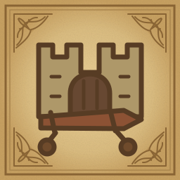
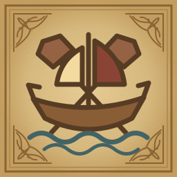
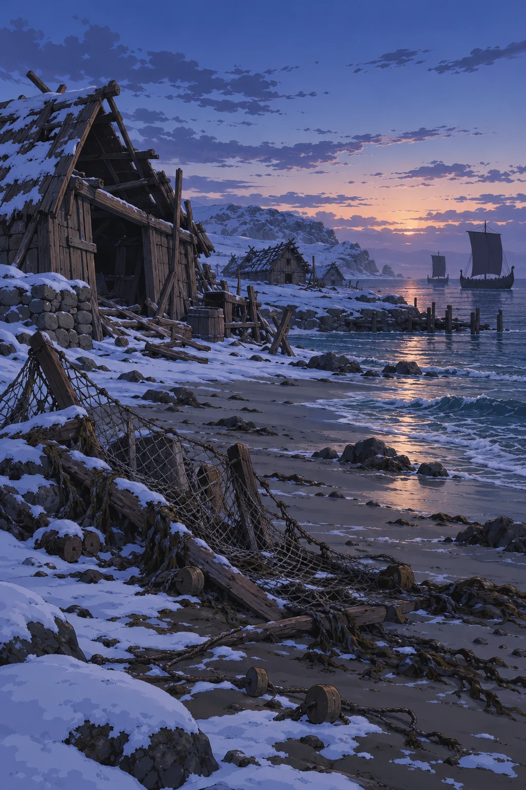
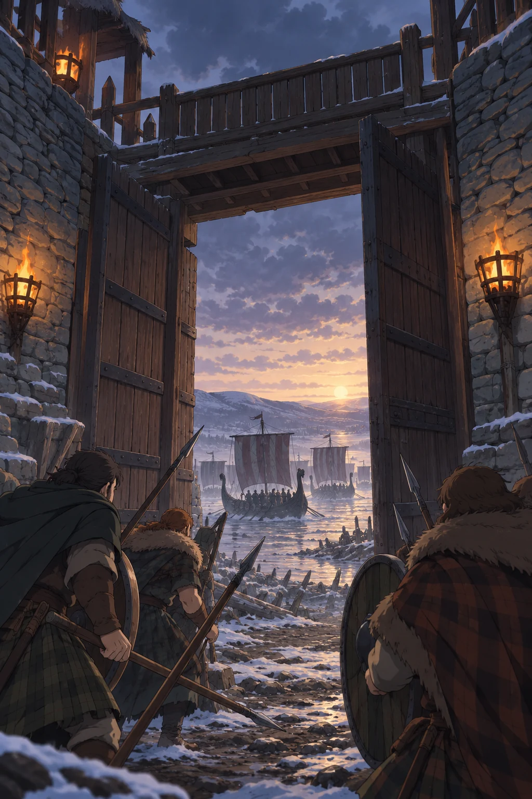
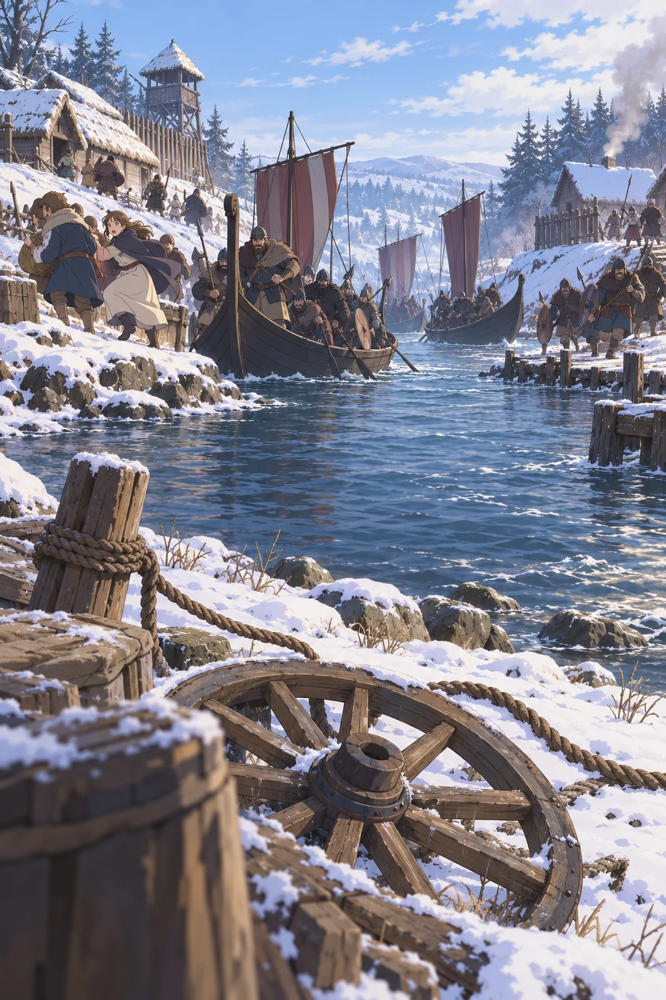
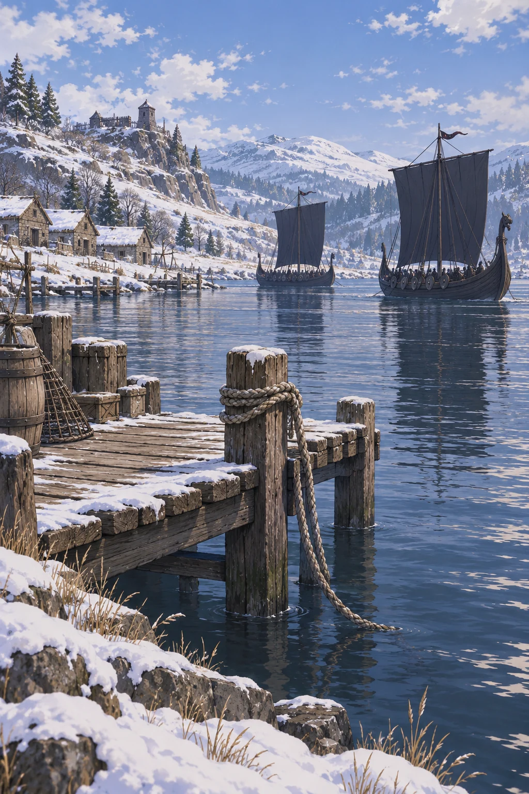
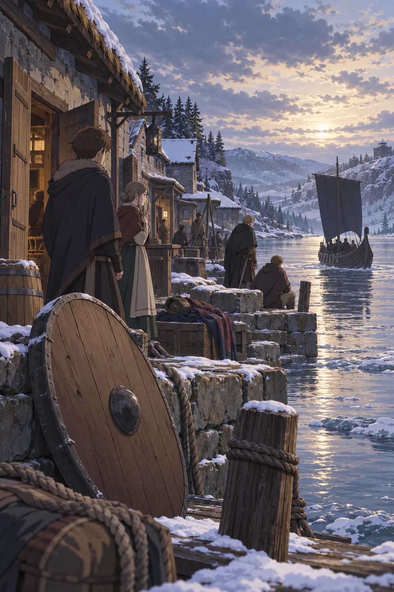

Im Jahr 1733 führten die Schwarzblut-Marodeure einen verheerenden Überfall auf die Südküste Leitheachs durch. Sie überrannten Broch an Clais , töteten oder verschleppten die dort anwesenden Iomrach und nutzten die offene Flussmündung , um bis nach Dun Laog vorzudringen. Dort kam es zu Plünderungen , Entführungen und zahlreichen Toten , bevor Verstärkung eintraf. Die Piraten konnten größtenteils entkommen – mitsamt Beute und Gefangenen , vor allem Alben , von denen viele nie zurückkehrten.
Sieben Tage auf der Karte
Die Originalmarkierungen der World-Anvil-Karte auf der vorhandenen Leitheach-Karte. Vier Phasen über sieben Raubzugstage lassen sich einzeln ansehen; die sieben nummerierten Ereignisse öffnen ihre Akten.
Alle Phasen · Nummern 1–7 entsprechen den Einzelberichten.

Befestigungssturm
SeegefechtEntfernungsreferenz: Dun Athar–Dunbaile: ungefähr 30 km oder mehr. Der neue Zeitplan rechnet mit 35 km als Arbeitsmaßstab, prüft 30–40 km und schlägt 35 % für längere Fahrwege zu. Landungen, Kämpfe und Ruhepausen stehen außerhalb der Fahrzeit. Die beiden Siedlungspaare werden an unterschiedlichen Tagen angegriffen. Die genaue Schiffsaufteilung und die vermessenen Fahrkurse bleiben offen. Das Seescharmützel vor Cluainslige ist auf der Quellkarte benannt, aber noch ohne Bericht oder Uhrzeit.
Kartenabgleich und Entfernungsprüfung · Vorhandene Leitheach-Karte öffnen
Die sieben Einzelberichte
- 1

Der Angriff auf SeannbailRaubzugstag 1 · 04:00–07:00 Uhr · Insel Seannbail · Tír na Sleagh · vorbereiteter Bericht - 2

Der Sturm auf Broch an ClaisRaubzugstag 1 · 18:00–21:30 Uhr · Broch an Clais · Tír na Gortanna · vorbereiteter Bericht - 3
 Die Plünderung von GleannbuarRaubzugstag 2 · 16:00–18:00 Uhr · Gleannbuar · Tír na Sleagh · vorbereiteter Bericht
Die Plünderung von GleannbuarRaubzugstag 2 · 16:00–18:00 Uhr · Gleannbuar · Tír na Sleagh · vorbereiteter Bericht - 4

Der Überfall auf Dairchoill und CeòdraigDairchoill: Raubzugstag 2 · 16:00–18:00 Uhr; Ceòdraig: Raubzugstag 3 · 18:00–20:00 Uhr · Dairchoill und Ceòdraig · Tír na Gortanna · vorbereiteter Bericht - 5

Der Angriff auf Abhainnclachan und SrathonnAbhainnclachan: Raubzugstag 3 · 10:00–12:00 Uhr; Srathonn: Raubzugstag 4 · 13:00–15:00 Uhr · Abhainnclachan und Srathonn · Tír na Sinsear · vorbereiteter Bericht - 6

Die Plünderung von TòrrachadhRaubzugstag 5 · 10:30–12:00 Uhr · Tòrrachadh · Tír na Sinsear · vorbereiteter Bericht - 7
 Der Angriff auf Dun LaogRaubzugstag 5 · 19:30 Uhr bis Raubzugstag 6 · 01:00 Uhr · Dun Laog · Tír na Sinsear · vorbereiteter Bericht
Der Angriff auf Dun LaogRaubzugstag 5 · 19:30 Uhr bis Raubzugstag 6 · 01:00 Uhr · Dun Laog · Tír na Sinsear · vorbereiteter Bericht
Die beteiligten Piratenbanden
Vier eigenständige Banden des Schwarzblut-Kollektivs bilden den Angriffsverband. Ihre Flottenstärken beziehen sich auf den Raubzug 1733.


Ein verwundbares Fürstentum
Im Jahr 1733 waren bereits dreizehn Jahre seit dem Ende des großen Krieges vergangen. Das Fürstentum Leitheach hatte sich seither weitgehend stabilisiert, zumindest nach außen hin herrschte Frieden . Im Inneren jedoch war die Lage angespannter, als es schien – insbesondere die fortschreitende Ausbreitung des Dunkelhains stellte eine wachsende Herausforderung dar. Immer mehr Truppen wurden an die nördliche Grenze abgezogen, um Dörfer zu evakuieren, Rückzugswege zu sichern und die wuchernde Bedrohung einzudämmen. Diese militärische Konzentration im Norden hinterließ weite Teile des Südens schlecht bewacht und verwundbar.
Diesen Zustand nutzten mehrere zwielichtige Kräfte aus. Einerseits begannen Schmugglerbanden, Diebessyndikate und Unterweltzirkel , sich in den Grenzregionen und Städten festzusetzen. Inmitten eines strukturell geschwächteren Fürstentums und unter der noch frischen Herrschaft eines jungen Fürsten begann sich ein kriminelles Netz zu formieren, das bald weit über einzelne Regionen hinausreichen sollte. Andererseits eröffnete die militärische Ablenkung neue Möglichkeiten für äußere Angriffe – insbesondere durch die Schwarzblut-Marodeure , eine organisierte, und gefährlich effiziente Flotte von Piraten und Plünderern, die nach dem Fall von Vennyr an Macht gewonnen hatten.
Ab dem Jahr 1730 kam es an den südlichen und östlichen Küsten Estrylls vermehrt zu kleineren Überfällen. Die Übergriffe blieben zunächst vereinzelt, doch schon bald häuften sich Berichte über verschwundene Schiffe, entführte Dorfbewohner und niedergebrannte Lagerhäuser. Im Jahr 1733 trat schließlich eine der Hauptgruppierungen der Schwarzblut-Flotte offen in Erscheinung: die Schwarzbucht-Marodeure . Unter ihrem Kapitän Skorviðr wagten sie einen koordinierten Angriff auf die Südküste Leitheachs – mit dem Ziel, junge Sklaven , wertvolle Geiseln und Beute zu erlangen.
Ihr Plan setzte auf Täuschung und einen überraschenden Zugriff auf die Flussmündung. Kleinere Banden und verbündete Seeräuber sollten mit Scheinangriffen an den Nordküsten die Aufmerksamkeit des Fürsten binden. Der südliche Angriffsverband sollte zunächst Seannbail treffen und anschließend Broch an Clais nehmen. Die Burg sicherte den Zugang zum Fluss; ihr Fall würde den Weg zu den Siedlungen im Landesinneren öffnen. Die Ablenkung verschaffte den Angreifern anfangs einen Vorteil, konnte aber nicht über mehrere Tage sämtliche Gegenmaßnahmen des Fürstentums verhindern.
Der Angriff auf Leitheach war kein Zufall, sondern das Ergebnis systematischer Ausnutzung einer geschwächten Ordnung – ein Wendepunkt, der das Fürstentum in seinen Grundfesten erschütterte und weitreichende Folgen für die innere wie äußere Sicherheit hatte.
Ablenkung und Täuschung
Der Raubzug des Schwarzblut-Kollektivs im Winter 1733 erstreckte sich über sieben Tage. Auf die vorbereitete Ablenkung im Norden und den Inselangriff folgten die Einnahme der Flussmündung, mehrtägige Plünderungen im Landesinneren und der Angriff auf Dun Laog. Anschließend benötigten die beladenen Schiffe zwei weitere Tage für den Rückzug zur Küste. Die zunächst überraschenden Angriffe legten die Schwächen der örtlichen Verteidigung offen; im weiteren Verlauf konnten die Verteidiger jedoch Alarm schlagen und Verstärkung sammeln.
Zu Beginn des Raubzugs wurden Scheinangriffe auf die nördlichen Siedlungen Fionnmara und Torrinbhir verübt. Die dort bereits eingesetzten Kräfte lenkten die Aufmerksamkeit der Heerführer zunächst nach Norden. Währenddessen griff der südliche Verband die Insel Seannbail an und plünderte die Siedlungen. Nach dem Inselangriff benötigten die Schiffe den restlichen Tag für die Küstenfahrt nach Broch an Clais. Die nördliche Ablenkung verzögerte die Reaktion der Verteidiger, verhinderte aber keine Alarmierung während der folgenden Tage.
Der Fall von Broch an Clais
Am Abend des ersten Raubzugstags erreichten die Piraten Broch an Clais. Nach der Annäherung in kleinen Booten öffneten Infiltratoren das Tor von innen und ließen die Haupttruppe ein. Die Verteidiger wurden überrumpelt; die anwesenden Iomrach wurden getötet oder verschleppt. Mit dem Fall der Flussfestung lag der Zugang ins Landesinnere offen. Die Schiffe blieben über Nacht bei Clais, um Beute zu verstauen und den Mannschaften Ruhe zu geben. Erst am folgenden Morgen begann die Fahrt flussaufwärts.
Die Plünderung am Fluss
Die Plünderungen am Fluss verteilten sich auf den zweiten bis fünften Raubzugstag. Getrennte Teilverbände erreichten zunächst Gleannbuar am Nordufer und Dairchoill am Südufer. Abhainnclachan wurde am dritten Tag angegriffen, Ceòdraig am Abend desselben Tages und Srathonn erst am vierten Tag. Zwischen den Orten lagen mehrstündige Fahrten sowie nächtliche Aufenthalte. Am fünften Tag folgte Tòrrachadh. Vorräte, Vieh, Waffen und Menschen wurden geraubt. Während die kleinen Uferorte keinen ausreichenden Schutz fanden, konnten Dun Laog und die umliegenden Häuser inzwischen Verteidiger sammeln. Die genaue Aufteilung der fünfzehn Schiffe auf die Teilverbände bleibt offen.
Dun Laog und der Rückzug
Am Abend des fünften Raubzugstags griffen die Piraten Dun Laogs Vorstadt an. Die Stadt war inzwischen alarmiert. Ihre 920 anfänglichen Verteidiger konzentrierten sich auf die inneren Viertel und Festungen; die ausgedehnte Vorstadt wurde dennoch schwer verwüstet. Später in derselben Nacht trafen die im Verlauf der vorherigen Tage alarmierten 1.000 Verstärkungen der Häuser Choinnich, Airgid, Caoimhe und Airt über den Fluss ein und stoppten den Vorstoß. Der Großteil der zuvor abgegangenen Beuteschiffe hatte bereits Vorsprung. Die verbliebene Hauptflotte begann zu Beginn des sechsten Raubzugstags den Rückzug flussabwärts. Die beladenen Schiffe benötigten einschließlich zweier längerer Halte bis zum Abend des siebten Tags, um Broch an Clais und die Mündung zu passieren. Verfolger stellten kleinere Nachzügler; die Kernstreitmacht entkam mit Beute und Gefangenen auf See. Mit dem Ende der örtlichen Verfolgung endete der Raubzug; die anschließende Heimreise dauerte darüber hinaus an.
Die sieben Tage des Raubzugs
Vom ersten Scheinangriff bis zum Ende der örtlichen Verfolgung vergehen 164 Stunden: sechs Tage und zwanzig Stunden, verteilt auf sieben Raubzugstage. Die ersten fünf Tage führen bis Dun Laog; die letzten beiden dienen dem beladenen Rückzug zur Küste.
Die Zeiten wurden nach den Kartenentfernungen überarbeitet. „Raubzugstag“ bezeichnet nur die relative Reihenfolge innerhalb dieses Ereignisses. Ein bestimmter Kalendertag oder Monat im Winter 1733 ist weiterhin nicht bekannt.
Raubzugstag 1
- Scheinangriffe auf Fionnmara und Torrinbhir. Die dort bereits eingesetzten Ablenkungskräfte sind nicht die eine Stunde später bei Seannbail angreifenden Schiffe.
- Beginn des Angriffs auf Seannbail; Landung, Plünderung und Zerstörung der Inselsiedlungen.
- Ende des Inselangriffs; Beginn der Küstenfahrt nach Broch an Clais. Für die rund 45 km geschätzten Weges sind zehn Stunden vorgesehen.
- Ankunft vor Broch an Clais. Kleine Boote nähern sich der Flussfestung.
- Infiltratoren öffnen das Tor von innen.
- Beginn des Sturms auf Broch an Clais. Die anwesenden Iomrach werden getötet oder verschleppt.
- Broch an Clais ist gefallen. Die Nacht dient der Sicherung, dem Verstauen der Beute und der Ruhe; die Flotte fährt noch nicht weiter.
Raubzugstag 2
- Aufbruch flussaufwärts nach acht Stunden Aufenthalt bei Clais. Die Angriffe auf beide Ufer erfolgen durch getrennte Teilverbände. Nachrichten über die Küstenangriffe ermöglichen inzwischen Alarmierung und Sammlung der Verteidiger.
- Beginn der Plünderung von Gleannbuar am Nordufer.
- Ein anderer Teilverband greift Dairchoill am Südufer an. Ceòdraig wird erst am folgenden Tag erreicht.
- Ende des Angriffs auf Gleannbuar; anschließende Weiterfahrt und nächtlicher Halt vor Abhainnclachan.
- Ende des Angriffs auf Dairchoill; Weiterfahrt in Richtung Ceòdraig mit nächtlichem Halt.
Raubzugstag 3
- Angriff auf Abhainnclachan nach der Etappe von Gleannbuar und zehn Stunden Nachtruhe.
- Ende der Plünderung von Abhainnclachan. Der Weg nach Srathonn nimmt den weiteren Tag und den nächsten Vormittag in Anspruch; dazwischen liegt eine Nachtruhe.
- Der südliche Teilverband erreicht Ceòdraig und beginnt den Überfall.
- Ende des Angriffs auf Ceòdraig. Nach der Nachtruhe folgt die Anschlussfahrt zur weiteren Flussroute.
Raubzugstag 4
- Beginn des Angriffs auf Srathonn. Abhainnclachan und Srathonn werden ausdrücklich nicht gleichzeitig angegriffen.
- Ende der Plünderung von Srathonn; Vorstoß in Richtung Tòrrachadh mit nächtlichem Halt. Die von Ceòdraig kommenden Schiffe folgen zeitversetzt.
Raubzugstag 5
- Angriff auf Tòrrachadh; die Plünderung und Landung erhalten ein eigenes Zeitfenster.
- Abfahrt von Tòrrachadh in Richtung Dun Laog; für etwa 25 km geschätzten Weges sind siebeneinhalb Stunden vorgesehen.
- Angriff auf Dun Laogs Vorstadt bei Dunkelheit. Die Stadt ist bereits alarmiert: 920 Verteidiger halten die inneren Viertel und Festungen, können jedoch die gesamte Vorstadt nicht schützen.
- Auch die zeitversetzt aus dem südlichen Flussabschnitt nachrückenden Schiffe können Dun Laog nun erreicht haben. Eine exakte Verteilung der Banden und Schiffe wird daraus nicht abgeleitet.
- Die im Verlauf der vorausgehenden Tage alarmierte Verstärkung der Häuser Choinnich, Airgid, Caoimhe und Airt trifft über den Fluss ein. Ihr Eintreffen beendet den Vorstoß der Piraten; der Großteil der zuvor abgegangenen Beuteschiffe hat bereits Vorsprung.
Raubzugstag 6
- Die verbliebene Hauptflotte löst sich von Dun Laog und beginnt den beladenen Rückzug flussabwärts. Sie hat damit noch nicht die offene See erreicht.
- Fortsetzung der Fahrt nach einem siebenstündigen Halt. Verfolger stellen einzelne Nachzügler; ein weiterer achtstündiger Halt ist in der folgenden Nacht vorgesehen.
Raubzugstag 7
- Letzte Tagesetappe flussabwärts nach der Nachtruhe. Die Hauptflotte hat für die gesamte Strecke von Dun Laog zur Mündung rund 150 km geschätzten Weg und insgesamt 29 Fahrstunden zur Verfügung.
- Die letzten Schiffe der Hauptflotte passieren Broch an Clais und die Flussmündung in Richtung Küstengewässer.
- Die örtliche Verfolgung läuft aus; die entkommenen Piraten setzen sich auf See ab. Damit endet dieser Raubzug, nicht die unbestimmte Heimreise zu ihren Stützpunkten.
Fahrzeiten, Entfernungen und Ruhepausen
Für Dun Athar–Dunbaile werden als Arbeitsmaßstab 35 km angesetzt und zusätzlich 30–40 km geprüft. Die folgenden Schätzungen enthalten 35 % Wegzuschlag auf die Kartenabstände. Geplant wird mit höchstens 5,5 km/h an der Küste, 4 km/h flussaufwärts und 6 km/h beim beladenen Rückzug flussabwärts. Das sind Planungsannahmen über Grund; Wind, Strömung und exakte Fahrwasser sind nicht überliefert.
| Abschnitt | Zeitfenster | Weg ca. | Fahrt / Halt |
|---|---|---|---|
| Seannbail → Broch an Clais | Raubzugstag 1 · 07:00 Uhr bis Raubzugstag 1 · 17:00 Uhr | 45 km | 10 / 0 Std. |
| Clais → Gleannbuar | Raubzugstag 2 · 05:30 Uhr bis Raubzugstag 2 · 16:00 Uhr | 35 km | 10,5 / 0 Std. |
| Clais → Dairchoill | Raubzugstag 2 · 05:30 Uhr bis Raubzugstag 2 · 16:00 Uhr | 23 km | 10,5 / 0 Std. |
| Gleannbuar → Abhainnclachan | Raubzugstag 2 · 18:00 Uhr bis Raubzugstag 3 · 10:00 Uhr | 20 km | 6 / 10 Std. |
| Dairchoill → Ceòdraig | Raubzugstag 2 · 18:00 Uhr bis Raubzugstag 3 · 18:00 Uhr | 48 km | 14 / 10 Std. |
| Abhainnclachan → Srathonn | Raubzugstag 3 · 12:00 Uhr bis Raubzugstag 4 · 13:00 Uhr | 50 km | 15 / 10 Std. |
| Ceòdraig → Anschluss bei Srathonn | Raubzugstag 4 · 06:00 Uhr bis Raubzugstag 4 · 20:00 Uhr | 49 km | 14 / 0 Std. |
| Srathonn → Tòrrachadh | Raubzugstag 4 · 15:00 Uhr bis Raubzugstag 5 · 10:30 Uhr | 32 km | 9,5 / 10 Std. |
| Tòrrachadh → Dun Laog | Raubzugstag 5 · 12:00 Uhr bis Raubzugstag 5 · 19:30 Uhr | 25 km | 7,5 / 0 Std. |
| Nachrückende Schiffe: Srathonn → Tòrrachadh → Dun Laog | Raubzugstag 5 · 04:00 Uhr bis Raubzugstag 5 · 22:30 Uhr | 57 km | 16,5 / 2 Std. |
| Dun Laog → Flussmündung bei Clais | Raubzugstag 6 · 01:00 Uhr bis Raubzugstag 7 · 21:00 Uhr | 149 km | 29 / 15 Std. |
Gleannbuar und Dairchoill werden von getrennten Teilverbänden angegriffen. Der südliche Verband folgt später nach Dun Laog; daraus ergibt sich keine belegte Zuteilung einzelner Banden oder Schiffe. Auf den langen Etappen sind Nachtruhen vorgesehen. Der Rückzug erhält insgesamt 15 Stunden Halt und 29 Fahrstunden; die Fahrt kann Segeln und wechselnde Ruderbesatzungen umfassen.
Die nördlichen Täuschungsziele sind ein eigener Einsatzraum. Der Fluchtpfeil im Meer bezeichnet lediglich eine Richtung. Sein Kartenpunkt ist kein am letzten Abend zu erreichender Hafen. Auch das nur benannte Seegefecht vor Cluainslige bleibt ohne erfundene genaue Datierung.
Sieben Jahre später: eine Erinnerung
Fionnáns und Bradans Gespräch blickt aus dem Jahr 1740 auf 1733 zurück. Bradans Angabe „siebenunddreißig“ meint sein damaliges Alter. Die Szene wird nicht in den Raubzug versetzt.
Fionnán : „Du warst hier... als es passiert ist, oder? Damals, vor sieben Jahre. Die Piraten.“
Bradan : „Hm. Ich war siebenunddreißig. Haken draußen, wie jetzt. Es war ein stiller Abend. Nebel lag auf dem Fluss, nicht mal die Vögel haben geschrien.“
Fionnán : „Und du hast sie gesehen?“
Bradan : „Zuerst nicht. Nur dunkle Formen. Lang und schmal. Sie glitten still. Keine Segel. Keine Ruder, die man hören konnte. Dann... das Licht. Ein Schimmer auf Stahl. Und... Schreie.“
Fionnán : „Von Broch an Clais?“
Bradan : „Ja. Zuerst dachte ich, der Wind täuscht mich. Doch dann stieg Rauch auf. Nicht von einem Herd. Breit. Schwarz. Und schnell. Ich wusste, das ist kein Streit unter Bauern.“
Fionnán : „Haben sie uns gesehen? Hier drüben?“
Bradan : „Wenn sie’s taten, haben sie uns verschont. Vielleicht zu klein. Vielleicht zu tief versteckt. Ich hab euch in die alte Räucherkammer gebracht. Du warst noch zu klein, um zu verstehen, warum man leise sein muss, wenn draußen jemand schreit.“
Fionnán : „Und jetzt bauen sie Broch an Abhainn. Damit so was nicht wieder passiert.“
Bradan (blickt auf das graue Mauerwerk):
„Auch die Iomrach hatten Mauern. Aber keine, die horchten. Keine, die wachten. Und als das Blut floss, standen sie stumm da wie Grabsteine.“
Fionnán : „Und wenn sie wiederkommen?“
Bradan (nach kurzem Zögern): „Dann hoff ich, du hast gelernt, leise zu sein – oder stark genug, um laut zu kämpfen.“
Quellenbuch aufschlagen Texte, Tabellen und offene Vorlagenfelder
Archivquelle coastal-02 · Original als Text · Unverändertes Original · Abgleich und Bildnachweise
1. Einführung
Im Jahr 1733 führten die Schwarzblut-Marodeure einen verheerenden Überfall auf die Südküste Leitheachs durch. Sie überrannten Broch an Clais , töteten oder verschleppten die dort anwesenden Iomrach und nutzten die offene Flussmündung , um bis nach Dun Laog vorzudringen. Dort kam es zu Plünderungen , Entführungen und zahlreichen Toten , bevor Verstärkung eintraf. Die Piraten konnten größtenteils entkommen – mitsamt Beute und Gefangenen , vor allem Alben , von denen viele nie zurückkehrten.
Verlauf der Geschehenisse
2. Hintergrund
Im Jahr 1733 waren bereits dreizehn Jahre seit dem Ende des großen Krieges vergangen. Das Fürstentum Leitheach hatte sich seither weitgehend stabilisiert, zumindest nach außen hin herrschte Frieden . Im Inneren jedoch war die Lage angespannter, als es schien – insbesondere die fortschreitende Ausbreitung des Dunkelhains stellte eine wachsende Herausforderung dar. Immer mehr Truppen wurden an die nördliche Grenze abgezogen, um Dörfer zu evakuieren, Rückzugswege zu sichern und die wuchernde Bedrohung einzudämmen. Diese militärische Konzentration im Norden hinterließ weite Teile des Südens schlecht bewacht und verwundbar.
Diesen Zustand nutzten mehrere zwielichtige Kräfte aus. Einerseits begannen Schmugglerbanden, Diebessyndikate und Unterweltzirkel , sich in den Grenzregionen und Städten festzusetzen. Inmitten eines strukturell geschwächteren Fürstentums und unter der noch frischen Herrschaft eines jungen Fürsten begann sich ein kriminelles Netz zu formieren, das bald weit über einzelne Regionen hinausreichen sollte. Andererseits eröffnete die militärische Ablenkung neue Möglichkeiten für äußere Angriffe – insbesondere durch die Schwarzblut-Marodeure , eine organisierte, und gefährlich effiziente Flotte von Piraten und Plünderern, die nach dem Fall von Vennyr an Macht gewonnen hatten.
Ab dem Jahr 1730 kam es an den südlichen und östlichen Küsten Estrylls vermehrt zu kleineren Überfällen. Die Übergriffe blieben zunächst vereinzelt, doch schon bald häuften sich Berichte über verschwundene Schiffe, entführte Dorfbewohner und niedergebrannte Lagerhäuser. Im Jahr 1733 trat schließlich eine der Hauptgruppierungen der Schwarzblut-Flotte offen in Erscheinung: die Schwarzbucht-Marodeure . Unter ihrem Kapitän Skorviðr wagten sie einen koordinierten Angriff auf die Südküste Leitheachs – mit dem Ziel, junge Sklaven , wertvolle Geiseln und Beute zu erlangen.
Ihr Plan setzte auf Täuschung und einen überraschenden Zugriff auf die Flussmündung. Kleinere Banden und verbündete Seeräuber sollten mit Scheinangriffen an den Nordküsten die Aufmerksamkeit des Fürsten binden. Der südliche Angriffsverband sollte zunächst Seannbail treffen und anschließend Broch an Clais nehmen. Die Burg sicherte den Zugang zum Fluss; ihr Fall würde den Weg zu den Siedlungen im Landesinneren öffnen. Die Ablenkung verschaffte den Angreifern anfangs einen Vorteil, konnte aber nicht über mehrere Tage sämtliche Gegenmaßnahmen des Fürstentums verhindern.
Der Angriff auf Leitheach war kein Zufall, sondern das Ergebnis systematischer Ausnutzung einer geschwächten Ordnung – ein Wendepunkt, der das Fürstentum in seinen Grundfesten erschütterte und weitreichende Folgen für die innere wie äußere Sicherheit hatte.
Fionnán : „Du warst hier... als es passiert ist, oder? Damals, vor sieben Jahre. Die Piraten.“
Bradan : „Hm. Ich war siebenunddreißig. Haken draußen, wie jetzt. Es war ein stiller Abend. Nebel lag auf dem Fluss, nicht mal die Vögel haben geschrien.“
Fionnán : „Und du hast sie gesehen?“
Bradan : „Zuerst nicht. Nur dunkle Formen. Lang und schmal. Sie glitten still. Keine Segel. Keine Ruder, die man hören konnte. Dann... das Licht. Ein Schimmer auf Stahl. Und... Schreie.“
Fionnán : „Von Broch an Clais?“
Bradan : „Ja. Zuerst dachte ich, der Wind täuscht mich. Doch dann stieg Rauch auf. Nicht von einem Herd. Breit. Schwarz. Und schnell. Ich wusste, das ist kein Streit unter Bauern.“
Fionnán : „Haben sie uns gesehen? Hier drüben?“
Bradan : „Wenn sie’s taten, haben sie uns verschont. Vielleicht zu klein. Vielleicht zu tief versteckt. Ich hab euch in die alte Räucherkammer gebracht. Du warst noch zu klein, um zu verstehen, warum man leise sein muss, wenn draußen jemand schreit.“
Fionnán : „Und jetzt bauen sie Broch an Abhainn. Damit so was nicht wieder passiert.“
Bradan (blickt auf das graue Mauerwerk):
„Auch die Iomrach hatten Mauern. Aber keine, die horchten. Keine, die wachten. Und als das Blut floss, standen sie stumm da wie Grabsteine.“
Fionnán : „Und wenn sie wiederkommen?“
Bradan (nach kurzem Zögern): „Dann hoff ich, du hast gelernt, leise zu sein – oder stark genug, um laut zu kämpfen.“
| Daten | |
| Zeitraum | 1733 |
| Ort | Kontinent Estryll - Fürstentum Leitheach |
| Dauer | Sieben Raubzugstage |
| Ausgang | Die Piraten werden zurückgeschlagen |
| Folgen | Viele Ortschaften inklusive der Burg Broch an Clais werden raubt oder zerstört |
| Konfliktparteien | |||||||||||
| Das Fürstentum Leitheach | |||||||||||
| Betroffene Clans | |||||||||||
| Gallchobhair | Cleir | Ghaiscioch | Caerdaiocht | ||||||||
| Iomrach | Offen | ||||||||||
| Verstärkung | |||||||||||
| Choinnich | Airgid | Caoimhe | Airt | ||||||||
| Die Schwarzblut Marodeure | |||||||||||
| Banden | Kapitäne | Anzahl der Schiffe | Besatzung | ||||||||
| Schwarzbucht Marodeure | Skorviðr | 6 Schiffe | 300 - 340 | ||||||||
| Nebelschnitter | Halrjarn | 3 Schiffe | 150 - 200 | ||||||||
| Flutbeißer | Tharn | 2 Schiffe | 80 - 100 | ||||||||
| Zungenfresser | Vargund | 4 Schiffe | 180 - 240 | ||||||||
| Offen | 15 Schiffe | 710 - 880 | |||||||||
5. Verlauf
Der Raubzug des Schwarzblut-Kollektivs im Winter 1733 erstreckte sich über sieben Tage. Auf die vorbereitete Ablenkung im Norden und den Inselangriff folgten die Einnahme der Flussmündung, mehrtägige Plünderungen im Landesinneren und der Angriff auf Dun Laog. Anschließend benötigten die beladenen Schiffe zwei weitere Tage für den Rückzug zur Küste. Die zunächst überraschenden Angriffe legten die Schwächen der örtlichen Verteidigung offen; im weiteren Verlauf konnten die Verteidiger jedoch Alarm schlagen und Verstärkung sammeln.
5.a) I. Phase – Ablenkung und Täuschung
Zu Beginn des Raubzugs wurden Scheinangriffe auf die nördlichen Siedlungen Fionnmara und Torrinbhir verübt. Die dort bereits eingesetzten Kräfte lenkten die Aufmerksamkeit der Heerführer zunächst nach Norden. Währenddessen griff der südliche Verband die Insel Seannbail an und plünderte die Siedlungen. Nach dem Inselangriff benötigten die Schiffe den restlichen Tag für die Küstenfahrt nach Broch an Clais. Die nördliche Ablenkung verzögerte die Reaktion der Verteidiger, verhinderte aber keine Alarmierung während der folgenden Tage.
5.b) II. Phase – Schlag gegen Broch an Clais
Am Abend des ersten Raubzugstags erreichten die Piraten Broch an Clais. Nach der Annäherung in kleinen Booten öffneten Infiltratoren das Tor von innen und ließen die Haupttruppe ein. Die Verteidiger wurden überrumpelt; die anwesenden Iomrach wurden getötet oder verschleppt. Mit dem Fall der Flussfestung lag der Zugang ins Landesinnere offen. Die Schiffe blieben über Nacht bei Clais, um Beute zu verstauen und den Mannschaften Ruhe zu geben. Erst am folgenden Morgen begann die Fahrt flussaufwärts.
5.c) III. Phase – Plünderung entlang des Flusses
Die Plünderungen am Fluss verteilten sich auf den zweiten bis fünften Raubzugstag. Getrennte Teilverbände erreichten zunächst Gleannbuar am Nordufer und Dairchoill am Südufer. Abhainnclachan wurde am dritten Tag angegriffen, Ceòdraig am Abend desselben Tages und Srathonn erst am vierten Tag. Zwischen den Orten lagen mehrstündige Fahrten sowie nächtliche Aufenthalte. Am fünften Tag folgte Tòrrachadh. Vorräte, Vieh, Waffen und Menschen wurden geraubt. Während die kleinen Uferorte keinen ausreichenden Schutz fanden, konnten Dun Laog und die umliegenden Häuser inzwischen Verteidiger sammeln. Die genaue Aufteilung der fünfzehn Schiffe auf die Teilverbände bleibt offen.
5.d) IV. Phase – Angriff auf Dun Laog und Rückzug
Am Abend des fünften Raubzugstags griffen die Piraten Dun Laogs Vorstadt an. Die Stadt war inzwischen alarmiert. Ihre 920 anfänglichen Verteidiger konzentrierten sich auf die inneren Viertel und Festungen; die ausgedehnte Vorstadt wurde dennoch schwer verwüstet. Später in derselben Nacht trafen die im Verlauf der vorherigen Tage alarmierten 1.000 Verstärkungen der Häuser Choinnich, Airgid, Caoimhe und Airt über den Fluss ein und stoppten den Vorstoß. Der Großteil der zuvor abgegangenen Beuteschiffe hatte bereits Vorsprung. Die verbliebene Hauptflotte begann zu Beginn des sechsten Raubzugstags den Rückzug flussabwärts. Die beladenen Schiffe benötigten einschließlich zweier längerer Halte bis zum Abend des siebten Tags, um Broch an Clais und die Mündung zu passieren. Verfolger stellten kleinere Nachzügler; die Kernstreitmacht entkam mit Beute und Gefangenen auf See. Mit dem Ende der örtlichen Verfolgung endete der Raubzug; die anschließende Heimreise dauerte darüber hinaus an.
| Zeit | Ereignisse · redaktionell überarbeitet am 25.10.2026 |
| Raubzugstag 1 · 03:00 Uhr | Scheinangriffe auf Fionnmara und Torrinbhir. Die dort bereits eingesetzten Ablenkungskräfte sind nicht die eine Stunde später bei Seannbail angreifenden Schiffe. |
| Raubzugstag 1 · 04:00 Uhr | Beginn des Angriffs auf Seannbail; Landung, Plünderung und Zerstörung der Inselsiedlungen. |
| Raubzugstag 1 · 07:00 Uhr | Ende des Inselangriffs; Beginn der Küstenfahrt nach Broch an Clais. Für die rund 45 km geschätzten Weges sind zehn Stunden vorgesehen. |
| Raubzugstag 1 · 17:00 Uhr | Ankunft vor Broch an Clais. Kleine Boote nähern sich der Flussfestung. |
| Raubzugstag 1 · 17:30 Uhr | Infiltratoren öffnen das Tor von innen. |
| Raubzugstag 1 · 18:00 Uhr | Beginn des Sturms auf Broch an Clais. Die anwesenden Iomrach werden getötet oder verschleppt. |
| Raubzugstag 1 · 21:30 Uhr | Broch an Clais ist gefallen. Die Nacht dient der Sicherung, dem Verstauen der Beute und der Ruhe; die Flotte fährt noch nicht weiter. |
| Raubzugstag 2 · 05:30 Uhr | Aufbruch flussaufwärts nach acht Stunden Aufenthalt bei Clais. Die Angriffe auf beide Ufer erfolgen durch getrennte Teilverbände. Nachrichten über die Küstenangriffe ermöglichen inzwischen Alarmierung und Sammlung der Verteidiger. |
| Raubzugstag 2 · 16:00 Uhr | Beginn der Plünderung von Gleannbuar am Nordufer. |
| Raubzugstag 2 · 16:00 Uhr | Ein anderer Teilverband greift Dairchoill am Südufer an. Ceòdraig wird erst am folgenden Tag erreicht. |
| Raubzugstag 2 · 18:00 Uhr | Ende des Angriffs auf Gleannbuar; anschließende Weiterfahrt und nächtlicher Halt vor Abhainnclachan. |
| Raubzugstag 2 · 18:00 Uhr | Ende des Angriffs auf Dairchoill; Weiterfahrt in Richtung Ceòdraig mit nächtlichem Halt. |
| Raubzugstag 3 · 10:00 Uhr | Angriff auf Abhainnclachan nach der Etappe von Gleannbuar und zehn Stunden Nachtruhe. |
| Raubzugstag 3 · 12:00 Uhr | Ende der Plünderung von Abhainnclachan. Der Weg nach Srathonn nimmt den weiteren Tag und den nächsten Vormittag in Anspruch; dazwischen liegt eine Nachtruhe. |
| Raubzugstag 3 · 18:00 Uhr | Der südliche Teilverband erreicht Ceòdraig und beginnt den Überfall. |
| Raubzugstag 3 · 20:00 Uhr | Ende des Angriffs auf Ceòdraig. Nach der Nachtruhe folgt die Anschlussfahrt zur weiteren Flussroute. |
| Raubzugstag 4 · 13:00 Uhr | Beginn des Angriffs auf Srathonn. Abhainnclachan und Srathonn werden ausdrücklich nicht gleichzeitig angegriffen. |
| Raubzugstag 4 · 15:00 Uhr | Ende der Plünderung von Srathonn; Vorstoß in Richtung Tòrrachadh mit nächtlichem Halt. Die von Ceòdraig kommenden Schiffe folgen zeitversetzt. |
| Raubzugstag 5 · 10:30 Uhr | Angriff auf Tòrrachadh; die Plünderung und Landung erhalten ein eigenes Zeitfenster. |
| Raubzugstag 5 · 12:00 Uhr | Abfahrt von Tòrrachadh in Richtung Dun Laog; für etwa 25 km geschätzten Weges sind siebeneinhalb Stunden vorgesehen. |
| Raubzugstag 5 · 19:30 Uhr | Angriff auf Dun Laogs Vorstadt bei Dunkelheit. Die Stadt ist bereits alarmiert: 920 Verteidiger halten die inneren Viertel und Festungen, können jedoch die gesamte Vorstadt nicht schützen. |
| Raubzugstag 5 · 22:30 Uhr | Auch die zeitversetzt aus dem südlichen Flussabschnitt nachrückenden Schiffe können Dun Laog nun erreicht haben. Eine exakte Verteilung der Banden und Schiffe wird daraus nicht abgeleitet. |
| Raubzugstag 5 · 23:00 Uhr | Die im Verlauf der vorausgehenden Tage alarmierte Verstärkung der Häuser Choinnich, Airgid, Caoimhe und Airt trifft über den Fluss ein. Ihr Eintreffen beendet den Vorstoß der Piraten; der Großteil der zuvor abgegangenen Beuteschiffe hat bereits Vorsprung. |
| Raubzugstag 6 · 01:00 Uhr | Die verbliebene Hauptflotte löst sich von Dun Laog und beginnt den beladenen Rückzug flussabwärts. Sie hat damit noch nicht die offene See erreicht. |
| Raubzugstag 6 · 11:00 Uhr | Fortsetzung der Fahrt nach einem siebenstündigen Halt. Verfolger stellen einzelne Nachzügler; ein weiterer achtstündiger Halt ist in der folgenden Nacht vorgesehen. |
| Raubzugstag 7 · 06:00 Uhr | Letzte Tagesetappe flussabwärts nach der Nachtruhe. Die Hauptflotte hat für die gesamte Strecke von Dun Laog zur Mündung rund 150 km geschätzten Weg und insgesamt 29 Fahrstunden zur Verfügung. |
| Raubzugstag 7 · 21:00 Uhr | Die letzten Schiffe der Hauptflotte passieren Broch an Clais und die Flussmündung in Richtung Küstengewässer. |
| Raubzugstag 7 · 23:00 Uhr | Die örtliche Verfolgung läuft aus; die entkommenen Piraten setzen sich auf See ab. Damit endet dieser Raubzug, nicht die unbestimmte Heimreise zu ihren Stützpunkten. |